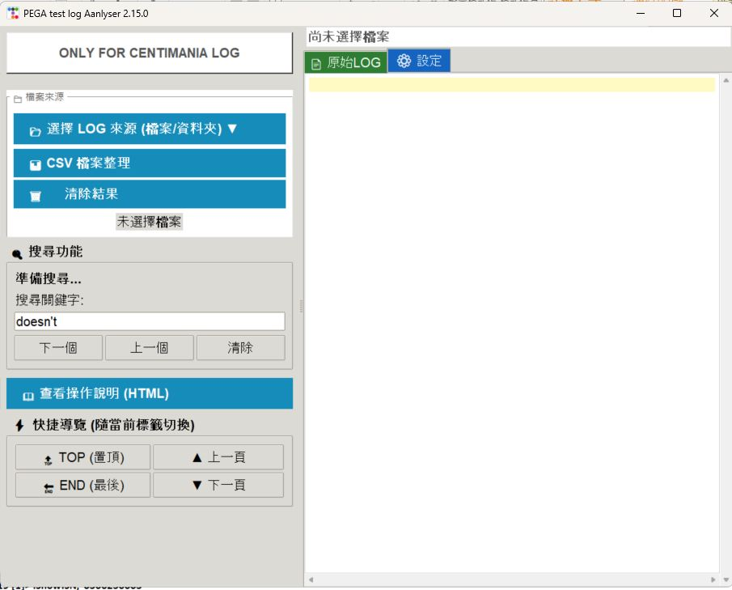
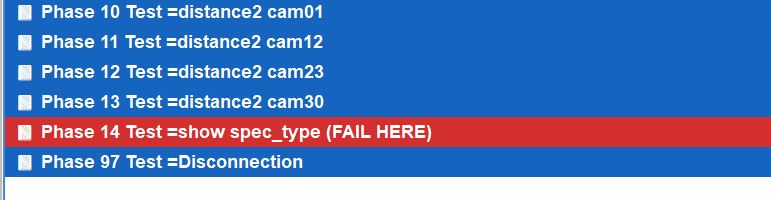
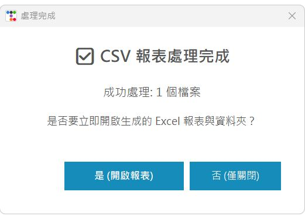
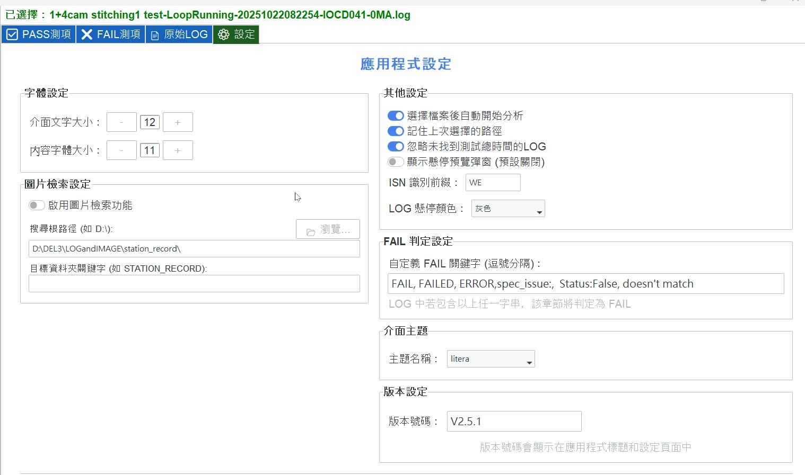

📂 1. 載入日誌 (單檔、壓縮包、資料夾)
點擊左側面板的 「選擇 LOG 來源」 按鈕即可載入資料。目前支援以下載入方式：
- 選擇檔案：選取
.log檔案（支援 Shift 多選）。 - 讀取壓縮檔：直接選取 ZIP 或 7z 檔案，程式會自動讀取內容。
- 讀取資料夾：選取目錄後，程式會自動過濾並分析其中的日誌檔案。

【圖 1】支援多種來源載入
日誌分析工具 - 使用說明
PEGA Log Analyzer 用於分析 Pega 測試日誌，整合了錯誤提取、規格比對與報表產出功能。其設計重點在於簡化日常排錯流程與數據整理工作。

點擊左側面板的 「選擇 LOG 來源」 按鈕即可載入資料。目前支援以下載入方式：
.log 檔案（支援 Shift 多選）。
匯入單一 Log 後，程式會自動比對規格並提取錯誤點。
Value = 5.1 (4.5, 5.5) 等格式。


提供日誌全文搜尋與快速捲動功能。

根據 ISN 快速開啟測試影像。

將分析結果匯出為 Excel 報表。


整理生產數據 CSV 檔案。



支援多種日誌來源與壓縮檔格式。

透過設定分頁，您可以調整分析引擎的邏輯、圖片檢索路徑以及介面顯示細節。

此設定決定了程式如何定義一個測試步驟為「失敗」：
NACK, Bad_Sum,
timeout），並以逗號分隔。
針對不同解析度的顯示器（例如 4K 螢幕）進行優化：

讓程式能精準定位圖片伺服器或本地路徑：
Z:\ 或 D:\IMAGES）。STATION_RECORD）。WE，分析 Log 後若提取到 WE123456，系統會自動使用此號碼去搜尋圖片。* 每次修改完設定後，請務必點擊底部的「儲存所有設定」按鈕，變更才會寫入 settings.json 並在下次啟動時生效。